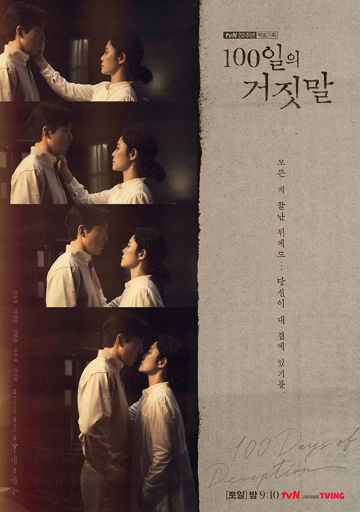
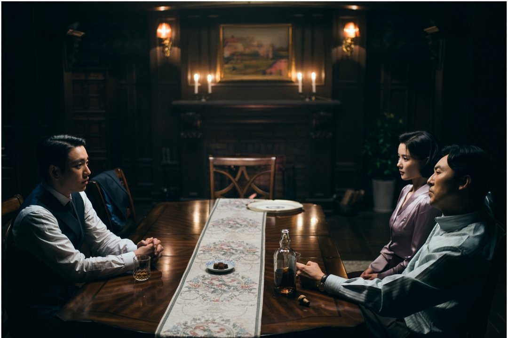
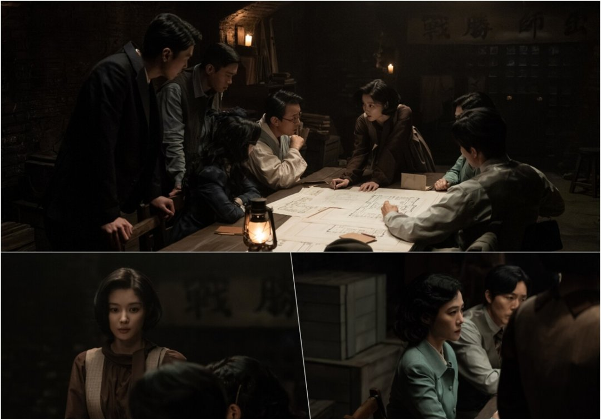
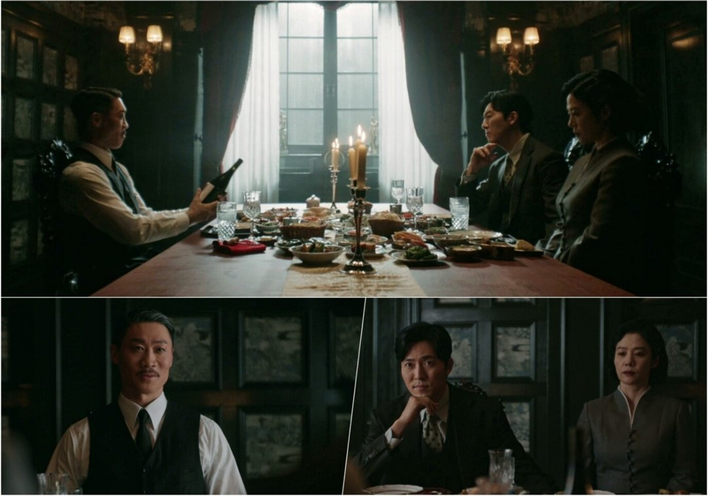
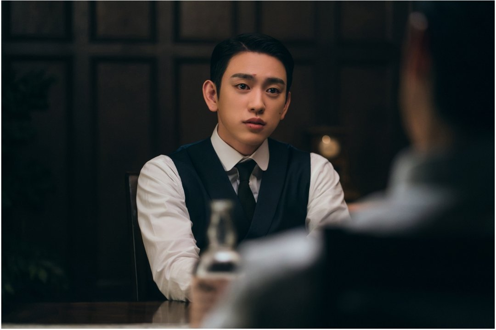

"이가경. 그렇게 불러도 됩니까?" 회차를 열 때 진짜 이름을 묻던 사람이, 끝에서는 그 사람에게 총을 겨눴어요. tvN 토일드라마 '100일의 거짓말' 12회 이야기예요. 한 회 만에 두 사람 사이가 왜 이렇게까지 뒤집혔는지, 장면을 원인 순서대로 다시 짚어 봤어요.
📷 사진 1 자리
▲ '100일의 거짓말' 유소란·유필립 포스터 · 사진=tvN 제공
진짜 이름을 부르게 된 아침
11회에서 사토 히데오(박진영)는 금서희로 지내던 이가경(김유정)의 본명을 알게 됐어요. 12회는 그 뒤 두 사람이 가짜 이름을 내려놓는 장면으로 시작해요. 히데오가 이가경이라고 불러도 되냐고 묻자, 이가경은 "네, 김태웅 통역관님"이라고 답해요.
📷 사진 2 자리
▲ '100일의 거짓말' 스틸 속 박진영(왼쪽)과 김유정 · 사진=tvN 제공
헤어지기 전 히데오는 하나코라는 여동생 이야기를 꺼내요. 둘이 어딘가 닮았으니 다음에 같이 만나자는 평범한 약속이었죠. 이 약속이 엔딩의 열쇠가 돼요.
▶ 영상 1 자리
관저로 보낸 폭탄, 꼬여 버린 작전
같은 날 정무총감 사토 신이치(진선규)는 유소란(김현주)과 유필립(이무생)을 관저 저녁 자리에 불렀어요. 이가경은 총독부와 관저를 잇는 기송관으로 폭탄을 보내는 작전을 짰어요.
📷 사진 3 자리
▲ 12회 작전을 앞두고 구국단 아지트에 모인 이가경과 단원들 · 사진=tvN 제공
변수는 두 가지였어요. 사토 신이치가 이가경을 밀정으로 보고 체포를 지시했고 이가경은 비슷한 옷을 입은 야마다를 대신 잡히게 해 빠져나갔어요. 그리고 이 소식을 들은 히데오가 기송실 문밖에서 당장 도망쳐야 한다고 외쳤지만, 함께 있던 박세환(김동영)은 그를 믿지 말라고 막았어요.
📷 사진 4 자리
▲ 사토 신이치의 관저 저녁 자리에 앉은 유소란·유필립 · 사진=tvN 제공
▶ 영상 2 자리
총구가 향한 이유
폭탄이 발송된 뒤 관저 서재의 전화를 받은 사람은 사토 신이치의 딸, 하나코였어요. 아이가 있다는 걸 안 이가경은 결국 히데오를 들어오게 했고 히데오가 수화기로 하나코에게 서재에서 나가라고 말하는 사이 폭탄이 터졌어요. 관저에 있던 유소란과 유필립도 하나코를 구하려 서재로 뛰어들었어요.
▶ 영상 3 자리
폭발 소리를 들은 히데오는 이가경에게 총을 겨눠요. 아침에 소개해 주겠다던 동생이 바로 그 폭탄이 향한 방에 있었으니까요. 이가경이 하나코를 살리려 했다는 사실을 다 알기 전에, 동생이 위험해진 원인이 이가경의 작전이라는 것만 먼저 보인 셈이에요.
📷 사진 5 자리
▲ 사토 히데오(김태웅) 역의 박진영 · 사진=tvN 제공
12회까지 본 '100일의 거짓말'
일제강점기 경성을 배경으로, 밀정이 된 소매치기 출신 이가경과 조선총독부 통역관 사토 히데오가 서로를 속이며 가까워지는 이야기예요.
이번 회의 볼거리는 같은 시간 두 곳에서 맞물린 작전이에요. 관저 식탁의 신경전과 총독부 기송실의 폭탄 발송이 한 통의 전화로 이어져요.
둘의 관계가 거짓에서 진심으로 넘어가는 흐름을 따라온 분, 첩보극의 긴장감을 좋아하는 분께 맞는 작품이에요.
회차 초반의 '하나코와 닮았다'는 가벼운 대사가 마지막 전화 한 통으로 돌아오는 구성이 깔끔해요. 히데오가 무엇을 오해했는지가 분명하게 그려졌으니, 13회의 관전 포인트는 이가경이 그 오해를 어떤 말로 풀지예요.
12회 엔딩의 총구는 이가경의 정체 때문이 아니라 폭탄이 향한 방에 하나코가 있었기 때문이에요. 13회는 11월 21일 토요일 밤 9시 10분 tvN에서 방송하고 티빙에서도 볼 수 있어요.




